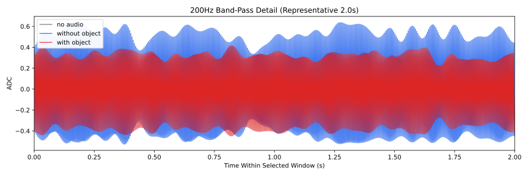
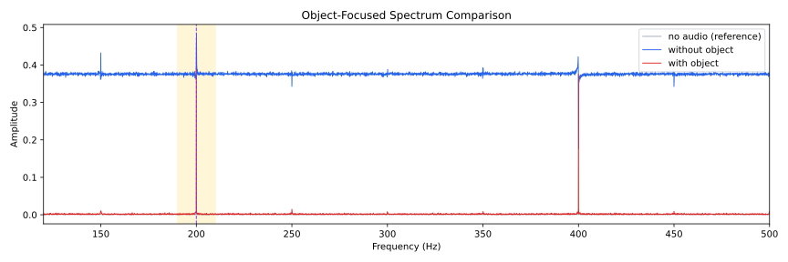
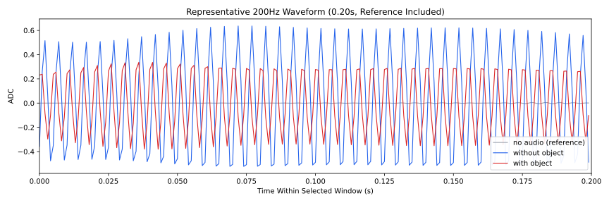
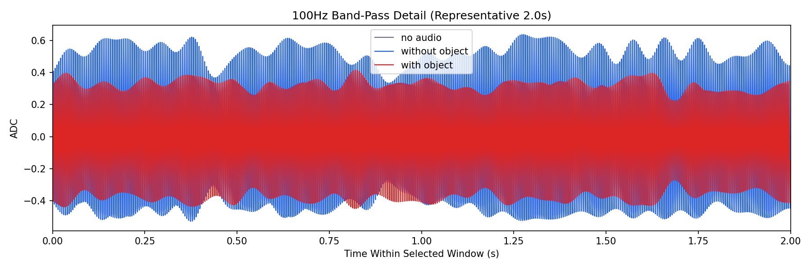
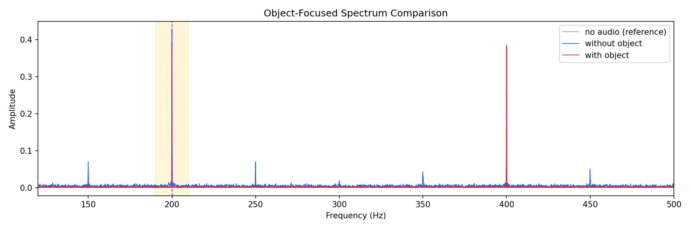
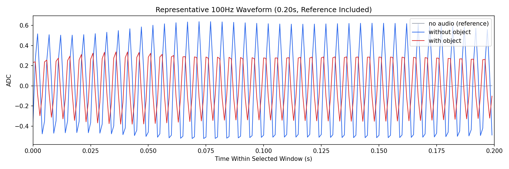

Background: F:\项目类文件夹\异物检测4.10\Data_Dual\frequency_sweep\0200Hz\repeat_05\raw\no_audio.csv
Without object: F:\项目类文件夹\异物检测4.10\Data_Dual\frequency_sweep\0200Hz\repeat_05\raw\without_object.csv
With object: F:\项目类文件夹\异物检测4.10\Data_Dual\frequency_sweep\0200Hz\repeat_05\raw\with_object.csv
| Metric | 无音频 | 100Hz无异物 | 100Hz有异物 | 无异物/无音频 | 有异物/无异物 | 有异物/无音频 |
|---|---|---|---|---|---|---|
| centered_rms | 0.046967 | 18.390929 | 0.400350 | 391.5737 | 0.0218 | 8.5241 |
| raw_target_amp | 0.000905 | 0.428315 | 0.393814 | 473.0360 | 0.9194 | 434.9327 |
| filtered_rms | 0.009583 | 4.018499 | 0.277632 | 419.3385 | 0.0691 | 28.9715 |
| filtered_target_amp | 0.000905 | 0.428315 | 0.393814 | 473.0361 | 0.9194 | 434.9327 |
| filtered_energy_ratio | 0.041631 | 0.047744 | 0.480906 | 1.1468 | 10.0726 | 11.5516 |
| window_filtered_target_amp_mean | 0.003912 | 0.556458 | 0.391473 | 142.2327 | 0.7035 | 100.0620 |
| window_filtered_target_amp_std | 0.004904 | 0.893477 | 0.017583 | 182.1884 | 0.0197 | 3.5853 |





